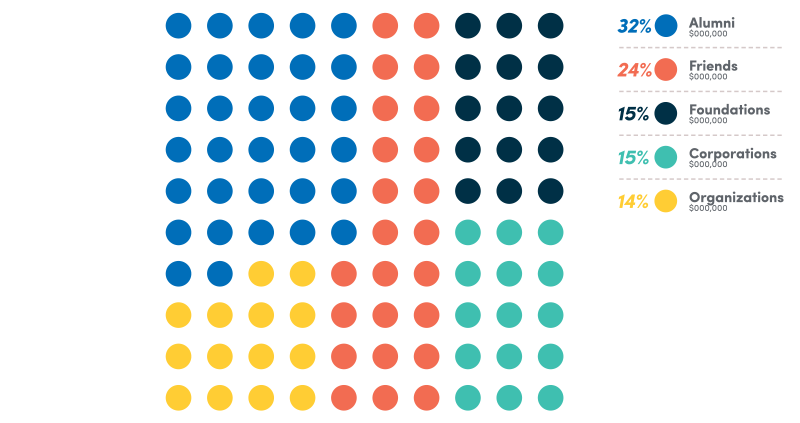
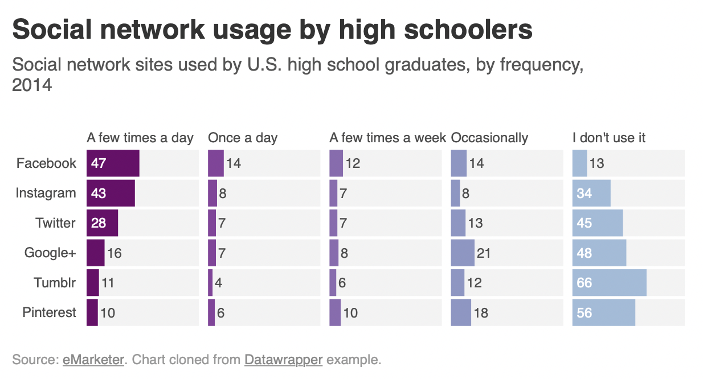
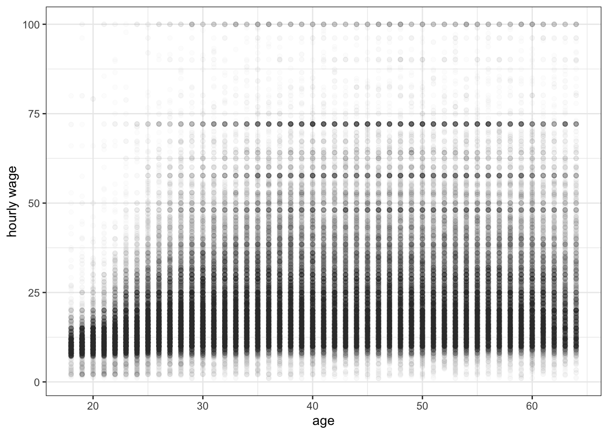
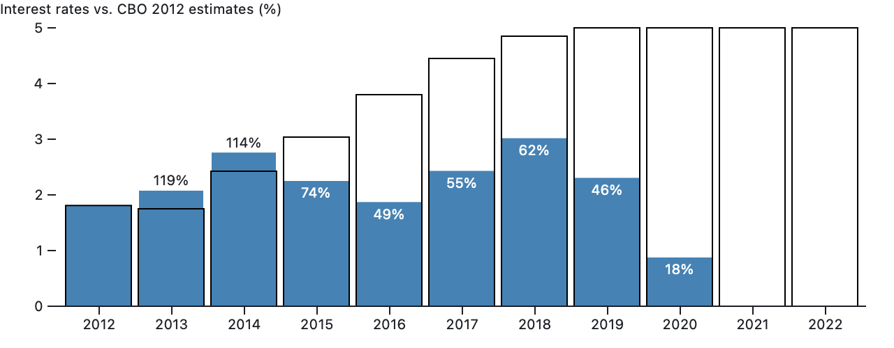

Data Visualization Glossary
Common terms used when working with data
Presented below are common terms you may hear when talking about charts, data, and stats. This page is meant to be used as a reference: use CMD + F to search for a specific chart or data viz term. Definitions originally crowd sourced from Observable. Charts and designs by Justin. Enjoy! 🤓
Cardinality
The cardinality of a set means the number of its elements. Two sets have the same (or equal) cardinality if and only if they have the same number of elements, which is the another way of saying that there is a 1-to-1 correspondence between the two sets.
For example, the set A = {2, 4, 6} contains 3 elements, and therefore A has a cardinality of 3.
Cartesian coordinates 📍

Cartesian coordinates - all possible combinations of values from two dimensions. For example, the geometric plane consists of points which can be represented by 2 coordinate axes (hence 2-dimensional or Cartesian coordinate system). Imagine a grid- if you can picture the game Battleship, even better- and you're mostly there.
Categorization
Categorization - aggregate data by grouping items. For example, instead of building a graph for all values of age you can create two categories: more than or equal to (≥) 50 years, or less than (<) 50 years.
Chord diagrams
This type of diagram visualizes the inter-relationships between entities. The connections between entities are used to display that they share something in common. This makes Chord Diagrams ideal for comparing the similarities within a dataset or between different groups of data.

Nodes are arranged along a circle, with the relationships between points connected to each other either through the use of arcs or Bézier curves. Values are assigned to each connection, which is represented proportionally by the size of each arc. Color can be used to group the data into different categories, which aids in making comparisons and distinguishing groups.
Technically, the above chart is an adaptation of a standard chord diagram. However, I think it's to cool not to share. This art was created by Nadieh Bremmer and plots dialogue from the Lord of the Rings by character and place.
Choropleth Maps

Choropleth Maps display divided geographical areas or regions that are colored, shaded or patterned in relation to a data variable. This provides a way to visualize values over a geographical area, which can show variation or patterns across the displayed location. One downside to the use of color is that you can't accurately read or compare values from the map. Another issue is that larger regions appear more emphasized then smaller ones, so the viewer's perception of the shaded values are affected. A common error when producing Choropleth Maps is to encode raw data values (such as population) rather than using normalized values (calculating population per square kilometer for example) to produce a density map.
Correlation

Correlation is the measure of how much one set of values depends on another. If values increase together, they are positively correlated. If values from one set increase as the other decreases, they are negatively correlated. There is no correlation when a change in one set has nothing to do with a change in the other.
Data Exploration 🔎
The part of the data science process where you ask a million basic questions that helps to understand the context of a data set. What you learn during the exploration phase will guide more in-depth analysis later. Further, it helps you recognize when a result might be surprising and warrant further investigation. Processing 900 different basic questions helps to find the one or two key stories in the data.
Data Mining
The process of pulling actionable insight out of a set of data and putting it to good use. This includes everything from cleaning and organizing the data, to analyzing it to find meaningful patterns and connections, to communicating those connections in a way that helps decision-makers improve their product or organization.
Data Pipelines

A collection of scripts or functions that pass data along in a series. The output of the first method becomes the input of the second. This continues until the data is appropriately cleaned and transformed for whatever task a team is working on.
Data Wrangling
The process of taking data in its original form and “taming” it until it works better in a broader workflow or project. Taming means making values consistent with a larger data set, replacing or removing values that might affect analysis or performance later, etc. When creating any data visualization there will always be some data wrangling required. As the New York Times reports, data wrangling is a key hurdle to insights.
Dot Maps
Dot Maps (a.k.a Point Map, Dot Distribution Map, Dot Density Map) are a way of detecting spatial patterns or the distribution of data over a geographical region, by placing equally sized points over a geographical region. There are two types of Dot Map: one-to-one (one point represents a single count or object) and one-to-many (one point represents a particular unit, e.g. 1 point = 10 trees). Dot Maps are ideal for seeing how things are distributed over a geographical region and can reveal patterns when the points cluster on the map. Dot Maps are easy to grasp and are better at giving an overview of the data, but are not great for retrieving exact values.
Dot Matrix Charts
Dot Matrix charts display discreet data in units of dots, each colored to represent a particular category and grouped together in a matrix. When only one variable/category is used in the dataset and all the dots are the same color, a Dot Matrix Chart can be used to primarily show proportions.
Dimension
Dimension - a parameter, characteristic. Column, in the context of tabular data. For example, age, gender, height, color, coordinates, time etc. In the table below, City and State are examples of two different dimensions of the data.
| Area Code | City | State |
|---|---|---|
| 770 | Atlanta | Georgia |
| 404 | Atlanta | Georgia |
| 718 | New York City | New York |
| 202 | Washington | D.C. |
| 901 | Memphis | Tennessee |
| 305 | Miami | Florida |
| 312 | Chicago | Illinois |
| 313 | Detroit | Michigan |
| 215 | Philadelphia | Pennsylvania |
| 803 | Columbia | South Carolina |
| 757 | Hampton Roads | Virginia |
| 504 | New Orleans | Louisiana |
ETL (Extract, Transform, Load)
ETL is a process that extracts data from different source systems, then transforms the data (like applying calculations, concatenations, etc.) and finally loads the data into a Data Warehouse system. ETL systems are generally gifted to us by data engineers and run behind the scenes. Ask Alyssa for more 😎
Flow chart

Flow chart (a.k.a Flow Diagram, Flow Process Chart, Process Chart, Process Map, Process Model, Work Flow Diagram). This type of diagram is used to show the sequential steps of a process. Flow charts map out a process using a series of connected symbols, which makes the process easy to understand and aids in its communication to other people.
Gantt chart

Commonly used as an organizational tool for project management, Gantt Charts display a list of activities (or tasks) with their duration over time, showing when each activity starts and ends. This makes a Gantt chart useful for planning and estimating how long an entire project might take. You can also see what activities are running in parallel to each other. A vertical line running through the chart is used to highlight the current date.
Gantt Charts are drawn within a table: rows are used for the activities and columns are used as the timescale. The duration of each activity is represented by the length of a bar plotted along this timescale. The start of the bar is the beginning of the activity and the end of the bar is when that activity should finish. Color-coding the bars can be used to categorize activities into groups. To show progress a bar can be partially filled in, shaded differently or use a different color, to differentiate between what is done and what is left to do. Connecting arrows can be used to show which tasks are dependent on each other.
Heat maps
Heat maps visualize data through variations in coloring. When applied to a tabular format, Heat maps are useful for cross-examining multivariate data, through placing variables in the rows and columns and coloring the cells within the table. Heat maps are good for showing variance across multiple variables, revealing any patterns, displaying whether any variables are similar to each other, and for detecting if any correlations exist in-between them. Typically, all the rows are one category (labels displayed on the left or right side) and all the columns are another category (labels displayed on the top or bottom). The individual rows and columns are divided into the subcategories, which all match up with each other in a matrix. The cells contained within the table either contain color-coded categorical data or numerical data, that is based on a color scale. The data contained within a cell is based on the relationship between the two variables in the connecting row and column.
Histogram
Status of World Nuclear Forces 2021
A Histogram visualizes the distribution of data over a continuous interval or certain time period. Each bar in a histogram represents the tabulated frequency at each interval/bin. Histograms help give an estimate as to where values are concentrated, what the extremes are and whether there are any gaps or unusual values. They are also useful for giving a rough view of the probability distribution.
I like this histogram chart because it appears that an individual named Jeff is in possession of ~10 nuclear bombs. Thankfully there is no Jeff- Jeff stands for ‘Joint Evaluated Fission and Fusion File’ (JEFF). It is a collaboration to get accurate data on fusion and fission. Data is accurate as of June 2021 and is provided by the Federation of American Scientists.
Join
A method for analyzing data. Merging entries from two or more tables of data based on common variables.
Kagi charts
Kagi charts are used to display the general levels of supply and demand of a particular asset by visualizing the price actions through a series of line patterns. Kagi Charts are time-independent and help filter out the noise that can occur on other financial charts (like on a Candlestick Chart). This is so that important price movements are displayed more clearly. Recognizing the patterns that occur in Kagi Charts is key to understanding them. While Kagi Charts do display dates or time on their x-axis, these are in fact markers for the key price action dates and are not part of a timescale. The y-axis on the right-hand side is used as the value scale.
Line Graphs
My excitement levels as my girlfriend says...
Line Graphs are used to display quantitative values over a continuous interval or time period. A Line Graph is most frequently used to show trends and analyze how the data has changed over time. Line Graphs are drawn by first plotting data points on a Cartesian coordinate grid, then connecting a line between all of these points. Typically, the y-axis has a quantitative value, while the x-axis is a timescale or a sequence of intervals.
Negative values can be displayed below the x-axis. The direction of the lines on the graph works as a nice metaphor for the data: an upward slope indicates where values have increased and a downward slope indicates where values have decreased. The line's journey across the graph can create patterns that reveal trends in a dataset. When grouped with other lines (other data series), individual lines can be compared to one another. However, avoid using more than 3-4 lines per graph, as this makes the chart more cluttered and harder to read. A solution to this is to divide the chart into smaller multiples (have a small Line Graph for each data series).
Marimekko Charts

Marimekko Charts (a.k.a Mosaic Plot) are used to visualize categorical data over a pair of variables. In a Marimekko Chart, both axes are variable with a percentage scale, that determines both the width and height of each segment. So Marimekko Charts work as a kind of two-way 100% Stacked Bar Graph. This makes it possible to detect relationships between categories and their subcategories via the two axes.
The main flaws of Marimekko Charts are that they can be hard to read, especially when there are many segments. Also, it’s hard to accurately make comparisons between each segment, as they are not all arranged next to each other along a common baseline. Therefore, Marimekko Charts are better suited for giving a more general overview of the data.
Mean
Mean (a.k.a Average) A calculation that gives us a sense of a “typical” value for a group of numbers. The mean is the sum of a list of values divided by the number of values in that list. It can be deceiving used on its own, and in practice we use the mean with other statistical values to gain intuition about our data.
Median
In a set of values listed in order, the median is whatever value is in the middle. We often use the median along with the mean to judge if there are values that are unusually high or low in the set. This is an early hint to explore outliers.
Mind map
A Mind map is a diagram used to map associated ideas, words, images and concepts together. The structure of a mind map is as follows: major categories extend out from a central node. Lesser categories branch out of the major ones as subcategories, which can also develop their own related subcategories.
Moving average
The value of Apple stock
Moving average is a method of drawing a smooth trend line by calculating a Y value for every X value by averaging the Y values of the n points leading to and including the X value. For example, in a timeline, a 50-day moving average calculates the average value of the trailing 50 points (days) and uses that to draw the trend line.
Multi-set Bar Charts
Multi-set Bar Charts (a.k.a Grouped Bar Chart or Clustered Bar Chart) is a variation of a Bar Chart used when two or more data series are plotted side-by-side and grouped together under categories, all on the same axis. Like a Bar Chart, the length of each bar is used to show discrete, numerical comparisons amongst categories. Each data series is assigned an individual color or a varying shade of the same color, in order to distinguish them. Each group of bars are then spaced apart from each other. The use of Multi-set Bar Charts is usually to compare grouped variables or categories to other groups with those same variables or category types.
Network diagram
A network diagram, a.k.a network graph, network map, or node-link diagram. This type of visualization shows how things are interconnected through the use of nodes / vertices and link lines to represent their connections and help illuminate the type of relationships between a group of entities.
Typically, nodes are drawn as little dots or circles, but icons can also be used. Links are usually displayed as simple lines connected between the nodes. However, in some Network Diagrams, not all of the nodes and links are created equally: additional variables can be visualized, for example, by making the node size or link stroke weight proportion to an assigned value. By mapping out connected systems, Network Diagrams can be used to interpret the structure of a network through looking for any clustering of the nodes, how densely nodes are connected or by how the diagram layout is arranged.
The two notable types of Network Diagram are "undirected" and "directed". Undirected Network Diagrams only display the connections between entities, while directed Network Diagrams show if the connections are one-way or two-way through small arrows. Network Diagrams have a limited data capacity and start to become hard to read when there are too many nodes and resemble "hairballs".
Nightingale Rose Chart

This chart was famously used by statistician and medical reformer Florence Nightingale to communicate the avoidable deaths of soldiers during the Crimean war.
Nightingale Rose Charts are drawn on a polar coordinate grid. Each category or interval in the data is divided into equal segments on this radial chart. How far each segment extends from the centre of the polar axis depends on the value it represents. So each ring from the centre of the polar grid can be used as a scale to plot the segment size and represent a higher value. Therefore, it’s important to notice with Nightingale Rose Charts that it’s the area, rather than the radius of a segment that represents its value.
The major flaw with Nightingale Rose Charts is that the outer segments are given more emphasis because of their larger area size. This disproportionately represents increases in value.

Normalize
A set of data is said to be normalized when all of the values have been adjusted to fall within a common range. We normalize data sets to make comparisons easier and more meaningful. For instance, taking movie ratings from a bunch of different websites and adjusting them so they all fall on a scale of 0 to 100.
NULL
NULL means that the value is unknown or unspecified. In the context of a database, null is the total absence of a value in a certain field and means that the field value is unknown. Null is not the same as a value of zero! Null implies that a database field value has not been stored.
Outlier
An Outlier is a person or thing that is atypical within a particular group, class, or category.
Overplotting
Overplotting is when the data or labels in a data visualization overlap, making it difficult to see individual data points in a data visualization. Overplotting typically occurs when there are either a large number of data points and/or a small number of unique values in the dataset.
Pictogram Charts
Pictogram Charts (a.k.a Pictograph Chart, Pictorial Chart, Pictorial Unit Chart, or Picture Graph) use icons to give a more engaging overall view of small sets of discrete data. Typically, the icons represent the data’s subject or category, for example, data on population would use icons of people. Each icon can represent one unit or any number of units (e.g. each icon represents 10). Data sets are compared side-by-side in either columns or rows of icons, to compare each category to one another.
Pie charts
Pie Charts help show proportions and percentages between categories by dividing a circle into proportional segments. Each arc length represents a proportion of each category, while the full circle represents the total sum of all the data, equal to 100%. Pie Charts are ideal for giving the reader a quick idea of the proportional distribution of the data.
Piled bar chart

A layered bar chart design where all the bars are sorted and aligned on a single, shared axis.
Pivot
Pivot is a tabular data presentation in which data is summarized by one or more categories. The labels for these categories are arranged across the top or down the side, and the table is populated with aggregate numerical calculations such as sums, averages, or counts that correspond to these categories. A pivot table makes it easy to see a high-level aggregate view and break it down by various categories to understand the drivers behind the data and make comparisons.
Population Pyramid
A Population Pyramid is a pair of back-to-back Histograms (for each sex) that displays the distribution of a population in all age groups and in both sexes. The X-axis is used to plot population numbers and the Y-axis lists all age groups. Population Pyramids are ideal for detecting changes or differences in population patterns. The shape of a Population Pyramid can be used to interpret a population. For example, a pyramid with a very wide base and a narrow top section suggests a population with both high fertility and death rates. Whereas, a pyramid with a wider top half and a narrower base would suggest an aging population with low fertility rates.
Radar charts
Radar charts (a.k.a Spider Chart, Web Chart, Polar Chart, or Star Plots) are a way of comparing multiple quantitative variables. This makes them useful for seeing which variables have similar values or if there are any outliers amongst each variable. Radar Charts are also useful for seeing which variables are scoring high or low within a dataset, making them ideal for displaying performance. Each variable is provided with an axis that starts from the center. All axes are arranged radially, with equal distances between each other, while maintaining the same scale between all axes. Grid lines that connect from axis-to-axis are often used as a guide. Each variable value is plotted along its individual axis and all the variables in a dataset and connected together to form a polygon.
Relationship
A connection or correlation between two or more variables through the data presented, like the market cap of a given stock over time versus overall market trend.
Sankey Diagrams

Sankey Diagrams display flows and their quantities in proportion to one another. The width of the arrows or lines are used to show their magnitudes, so the bigger the arrow, the larger the quantity of flow. Flow arrows or lines can combine together or split through their paths on each stage of a process. color can be used to divide the diagram into different categories or to show the transition from one state of the process to another. Typically, Sankey Diagrams are used to visually show the transfer of energy, money or materials, but they can be used to show the flow of any isolated system process.
Sample

A Sample is the collection of data points we have access to. We use a sample to make inferences about a larger population. For instance, a political poll takes a sample of 1,000 Greek citizens to infer the opinions of all of Greece. The reason samples are needed is that populations may be so large that counting all the individuals may not be possible or practical. Therefore, solving a problem in statistics usually starts with sampling.
Scatterplots
The Simpsons and IMDB score
Scatterplots (a.k.a Scatter Chart, Point Graph, or X-Y Plot) use a collection of points placed using Cartesian Coordinates (a grid) to display values from two variables. By displaying a variable in each axis, you can detect if a relationship or correlation between the two variables exists. The strength of the correlation can be determined by how closely packed the points are to each other on the graph.
Span chart
Span chart (a.k.a Range Bar/Column Graph, Floating Bar Graph, Difference Graph, High-Low Graph.) A chart used to display dataset ranges between a minimum value and a maximum value. Span Charts are ideal for comparing ranges, typically for categorized ranges. Span Charts focus the reader on only the extreme values and give no information on the values in between the minimum and maximum values or on averages or data distribution.
Spike histograms
Spike histograms typically use 100 or 200 bins. When the number of distinct data values is below the specified number of bins, I just do a frequency tabulation for all distinct data values, rounding only when two of the values are very close to each other. A spike histogram approximately reduces to a rug plot when there are no ties in the data.
Stacked Area Graphs
Stacked Area Graphs work in the same way as simple Area Graphs do, except for the use of multiple data series that start each point from the point left by the previous data series. The entire graph represents the total of all the data plotted. Stacked Area Graphs also use the areas to convey whole numbers, so they do not work for negative values. Overall, they are useful for comparing multiple variables changing over an interval.
Stacked Bar Graph
Stacked Bar Graph Unlike a Multi-set Bar Graph which displays their bars side-by-side, Stacked Bar Graphs segment their bars. Stacked Bar Graphs are used to show how a larger category is divided into smaller categories and what the relationship of each part has on the total amount. There are two types of Stacked Bar Graphs: (a) Simple Stacked Bar Graphs place each value for the segment after the previous one. The total value of the bar is all the segment values added together. Ideal for comparing the total amounts across each group/segmented bar. (b)100% Stack Bar Graphs show the percentage-of-the-whole of each group and are plotted by the percentage of each value to the total amount in each group. This makes it easier to see the relative differences between quantities in each group. Note:One major flaw of Stacked Bar Graphs is that they become harder to read the more segments each bar has. Also comparing each segment to each other is difficult, as they're not aligned on a common baseline.
Standard deviation

Standard deviation of a set of values helps us understand how spread out those values are. This statistic is more useful than the variance because it’s expressed in the same units as the values themselves. Mathematically, the standard deviation is the square root of the variance of a set. It’s often represented by the greek symbol sigma, σ.
Statistical Significance
A result is statistically significant when we judge that it probably didn’t happen due to chance. It is highly used in surveys and statistical studies, though not always an indication of practical value.
Stem and Leaf Plot

Stem and Leaf Plot (a.k.a Stemplot, Stem & Leaf Display) are a way of organizing data via their place value to show the distribution of data. Place values are shown ascending downwards on a "stem" column, typically but not always in tens. Data that is within each place value is listed and extends sideways from it as a "leaf".
Tables

Tables present data in a two-axis matrix and are often represented in the form of spreadsheets.
Target vs Actual chart
This chart compares actual data to targets by filling up hollow bars. For instance, it could compare monthly sales to business targets, or, in this case, actual interest rates to annual Congressional Budget Office estimates.
Time series
Apple (AAPL) stock price
Time series is a set of data that’s ordered by when each data point occurred. Think of stock market prices over the course of a month, or the temperature throughout a day.
Timeline

A Timeline is a graphical way of displaying a list of events in chronological order. Some timelines work on a scale, while others simply display events in sequence. If scale-based, a Timeline allows you to see when things occur or are to occur, by allowing the viewer to assess the time intervals between events.
Timetables
Timetables are used as a referencing and management tool for scheduled events, tasks and actions to take place. Organizing the data with a table into chronological and/or alphabetical order helps users for quicker referencing. Timetables are commonly used to display the arrival and departure time of trains and other forms of transportation.
Tree Diagram

Tree Diagram is a way of visually representing hierarchy in a tree-like structure. Typically the structure of a Tree Diagram consists of elements such as a root node, a member that has no superior/parent. Then there are the nodes, which are linked together with line connections called branches that represent the relationships and connections between the members. Finally, the leaf nodes (or end-nodes) are members who have no children or child nodes.
Treemaps

Treemaps are an alternative way of visualizing the hierarchical structure of a Tree Diagram while also displaying quantities for each category via area size. Each category is assigned a rectangle area with their subcategory rectangles nested inside of it. When a quantity is assigned to a category, its area size is displayed in proportion to that quantity and to the other quantities within the same parent category in a part-to-whole relationship. Ben Shneiderman originally developed Treemaps as a way of visualizing a vast file directory on a computer, without taking up too much space on the screen. This makes Treemaps a more compact and space-efficient option for displaying hierarchies, that gives a quick overview of the structure. The downside to a Treemap is that it doesn't show the hierarchal levels as clearly as other charts that visualize hierarchal data (such as a Tree Diagram or Sunburst Diagram).
Also, the area size of the parent category is the total of its subcategories. If no quantity is assigned to a subcategory, then it's area is divided equally amongst the other subcategories within its parent category. The way rectangles are divided and ordered into sub-rectangles is dependent on the tiling algorithm used. Many tiling algorithms have been developed, but the "squarified algorithm" which keeps each rectangle as square as possible is the one commonly used.
Trellis
A trellis chart is a grid of small charts, often called ‘small multiples’, and is basically a repetition of a chart across a grid. This grid usually is defined by the number of dimension values and organized in a way that either is a complete square (with leftovers) or another determined pattern (meaning a defined height/width).
Venn Diagram
A Venn Diagram is a diagram that visually displays all the possible logical relationships between a collection of sets. Each set is typically represented with a circle. Contained within each set is a collection of objects or entities that all have something in common. When sets overlap, it’s known as the intersection area. This is where entities that have all the qualities of the overlapping sets.
Violin Plot
Violin Plot is used to visualize the distribution of the data and its probability density. This chart is a combination of a Box Plot and a Density Plot that is rotated and placed on each side, to show the distribution shape of the data. The white dot in the middle is the median value and the thick black bar in the center represents the interquartile range. The thin black line extended from it represents the upper (max) and lower (min) adjacent values in the data. Box Plots are limited in their display of the data, as their visual simplicity tends to hide significant details about how values in the data are distributed. For example, with Box Plots, you can't see if the distribution is bimodal or multi-modal (seriously!). While Violin Plots display more information, they can be noisier than a Box Plot.
Wordcloud
A Wordcloud (a.k.a Tag Cloud) is a visualization method that displays how frequently words appear in a given body of text by making the size of each word proportional to its frequency. All the words are then arranged in a cluster or cloud of words. Typically, Word Clouds are used on websites or blogs to depict keyword or tag usage. Word Clouds can also be used to compare two different bodies of text together. Note: word clouds may be considered harmful.
Wrapped bar chart

A stylistic version of a bar graph that allows the number of values that can be simultaneously viewed to increase significantly.
XY chart
An XY chart is a visualization that specializes in studying the relationship between numeric variables. Data is shown as a graph where points are drawn based on two variables in the data (two fields or calculations). A Bubble Chart is a specialized kind of XY chart in which a third variable is represented by varying the area of the points (bubbles) based on the value of the third variable. Category data can also be presented by varying the color or shape of the points.